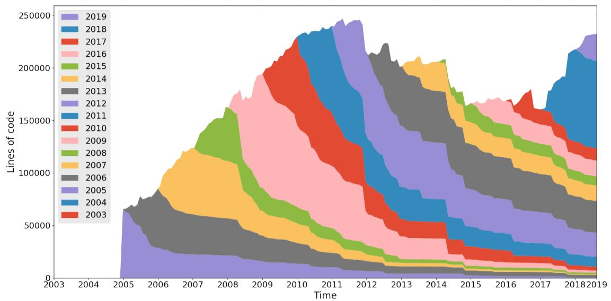

Clojure的外部性表现
https://www.aspect-analytics.com/media/blog/2021-04-26-clojure-i-choose-you/
https://insights.stackoverflow.com/survey/2019 2019年的SO调查可以看到，clj这么这么语言受欢迎程度很高，但是接受度还不太高，可能是语法或者是生态还有点门槛。
但是从工作人群来看，有经验的工程师都喜欢Clojure（以及F#, Erlang这样的语言，以及WebAssembly），可以看到这门语言可能还是很有生产力的，并且投资回报率看上去不错。
语言本身的特征就不多说了：simplicity，code is data, functional, full stack 等等。文中还有章图表现了clojure codebase retention. 也就是基础库每年的变化程度如何。比如2015年进入的基础库，到了2021年还剩下多少。下面两张图是clojue和scala的对比（都是jvm上的新兴编程语言）
可以看到clojure的codebase相当稳定，可以看到之后每年在上面的变动也比较少。我在想某种程度上，clj因为语法灵活的原因比如有macro, 导致其实大家也不需要在标准库上做什么改动。
而学习scala的同学就比较惨了，几乎过了几年就要从头学习一次标准库，而且据说语法变动也非常大，不知道scala是不是一直被odesky当做研究性质（包括社会化）的语言。
